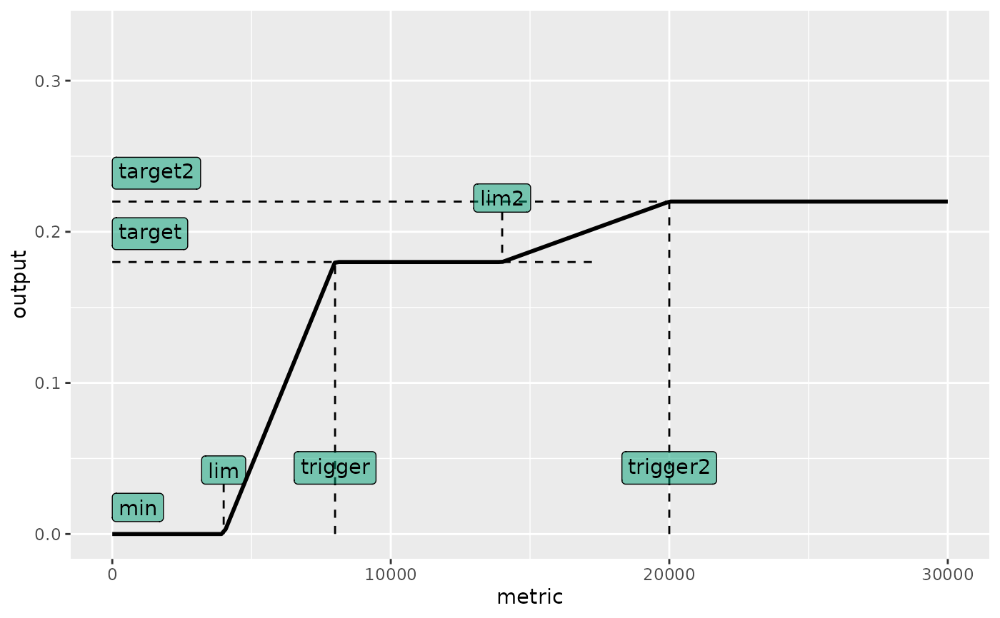
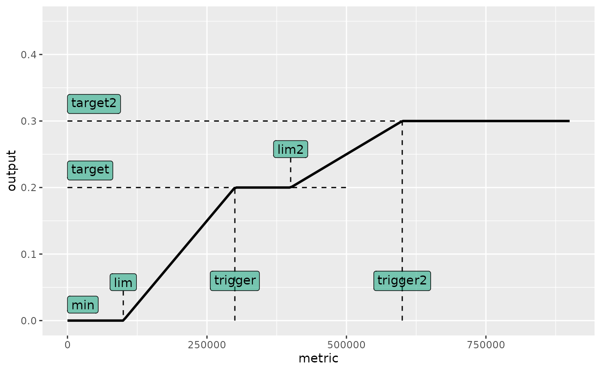

A harvest control rule with two flat top levels (a double-top shape), defined by two hockey-stick ramps that rise to two successive target levels.
doubletop.hcr(
stk,
ind,
target,
trigger,
lim = 0,
min = 0,
drop = 0,
lim2,
trigger2,
target2,
metric = "ssb",
output = "fbar",
dlow = NULL,
dupp = NULL,
all = TRUE,
initial = NULL,
args,
tracking,
...
)
plot_doubletop.hcr(
args,
obs = NULL,
kobe = FALSE,
xtarget = NULL,
alpha = 0.3,
labels = c(lim = "lim", trigger = "trigger", min = "min", target = "target", lim2 =
"lim2", trigger2 = "trigger2", target2 = "target2", drop = "drop")
)The 'oem' observation or SA estimation, an FLStock object.
Possible indicators returned by the 'est' step, FLQuants.
The first flat-top output level, numeric or FLQuant.
The metric value at which output first reaches target,
numeric or FLQuant.
The lower threshold of the stock metric, below which output equals
min, numeric or FLQuant.
Numeric. The minimum allowable control value.
Numeric. Metric threshold below which output is forced to min.
The metric value at which the second ramp begins (output starts
rising from target toward target2), numeric or FLQuant.
The metric value at which output reaches target2,
numeric or FLQuant.
The second (higher) flat-top output level, numeric or FLQuant.
The stock metric to use (e.g. "ssb"), character or function.
Character. The output control variable (e.g. "fbar").
A limit for the decrease in the output variable, numeric.
A limit for the increase in the output variable, numeric.
If TRUE, dupp and dlow limits are applied unconditionally.
Initial value of 'output' for dlow/dupp limits at iy.
A list of HCR arguments, or an mseCtrl / mpCtrl object.
An FLQuant used for tracking.
Optional FLStock, FLQuants, or FLQuant of observations to overlay.
Logical. If TRUE, overlay Kobe-style background colours.
x-axis position used to divide Kobe yellow/green regions.
Transparency for Kobe background polygons and observation points.
Named character vector of axis labels.
A list with elements 'ctrl' (fwdControl) and 'tracking'.
This function implements a double-top shaped HCR. The output rises linearly
from min at lim to target at trigger (first ramp), stays flat at
target between trigger and lim2, then rises linearly again from
target at lim2 to target2 at trigger2 (second ramp), and stays
flat at target2 above trigger2. The shape is:
target2 ________________________________
/
target /____________|
/
min ___/
lim trigger lim2 trigger2The optional drop argument forces the output to min when the metric
falls below drop. All dlow/dupp interannual constraints available in
hockeystick.hcr are also supported.
data(plesim)
# Double-top HCR: first plateau at F=0.18 (SSB 8000-14000),
# second plateau at F=0.22 (SSB > 20000)
ctrl <- mpCtrl(
est = mseCtrl(method=perfect.sa),
hcr = mseCtrl(method=doubletop.hcr,
args=list(metric="ssb", lim=4000, trigger=8000, target=0.18,
lim2=14000, trigger2=20000, target2=0.22, output="fbar")))
plot_doubletop.hcr(ctrl)

# Plot a double-top HCR
args <- list(lim=1e5, trigger=3e5, target=0.20,
lim2=4e5, trigger2=6e5, target2=0.30, min=0,
metric="ssb", output="fbar")
plot_doubletop.hcr(args)
